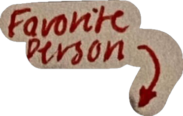
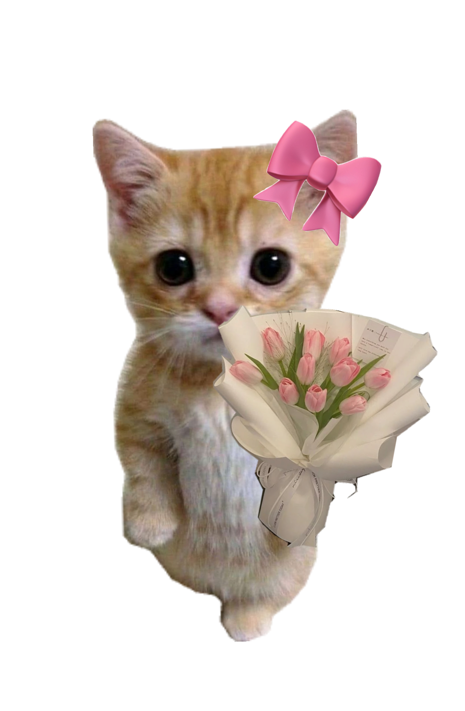

✦ una carta para ti · april 2026 ✦
No es una carta,
es un acto de amor
y valentía. 🌷
Abril, 2026 · Reydel ✍️
Hola Emi 👋
Sé que he tomado una decisión y quiero cambiar lo que contiene la carta, así que presta atención.
Voy a poner absolutamente todo lo que siento y todo lo que quiero decirte en esta ocasión. Lee esto con el corazón abierto, porque vas a entender algunas cosas que quiero que leas. ✨
① / ⑦
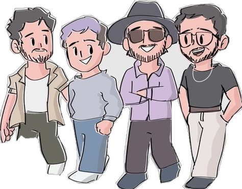
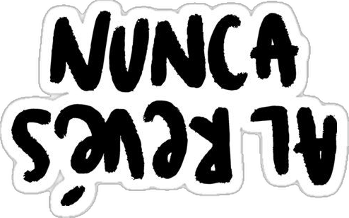
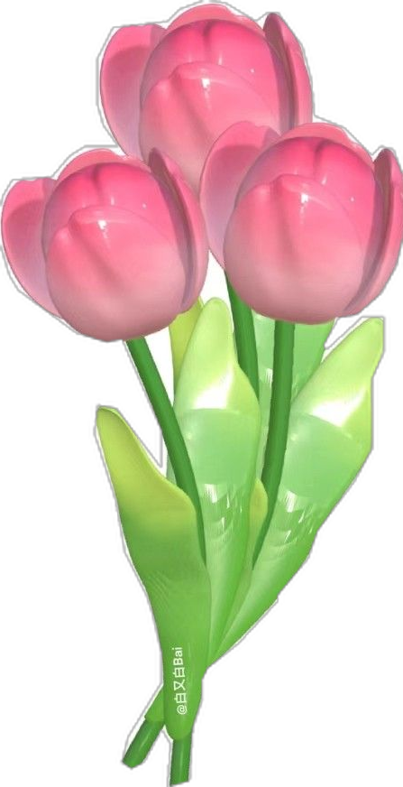

1. Lo que siento ahora
(y algo que quiero que sepas)Sé que te voy a extrañar mucho, pero también sé que vas a estar mejor y posiblemente con alguien mejor. Y aunque duela, me alegro por eso. Porque mi deseo más profundo siempre ha sido verte feliz, aunque no sea conmigo. Eso, de verdad, me hace sentir bien, Tati.
A pesar de todo, ¿odiarte? Jamás. Yo siempre te voy a desear lo mejor. No me importa si no es a mi lado, porque yo te amé de verdad.
Cuando te toquen chicos que solo te quieran para un rato, que solo te vean por tu físico, que no aguanten tus cambios de actitud, tus berrinches, tus cambios de humor… te darás cuenta.
Y vas a decir: "Mi niño era complicado e intenso, pero él me amó con toda su alma".
No sé si algún día entenderás cuánto significabas para mí, pero espero que al menos alguna vez recuerdes que alguien te quiso con todo el corazón.
② / ⑦
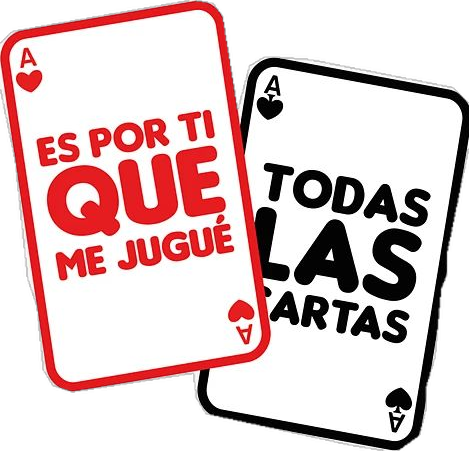
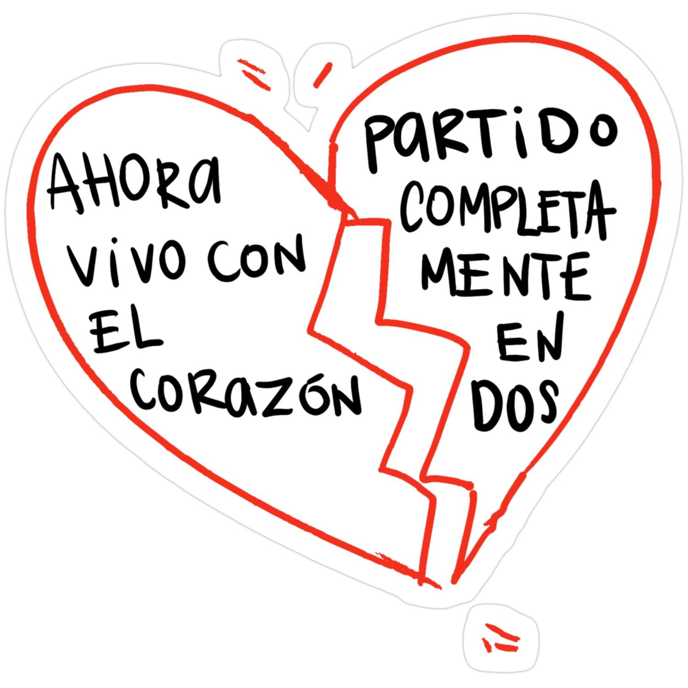
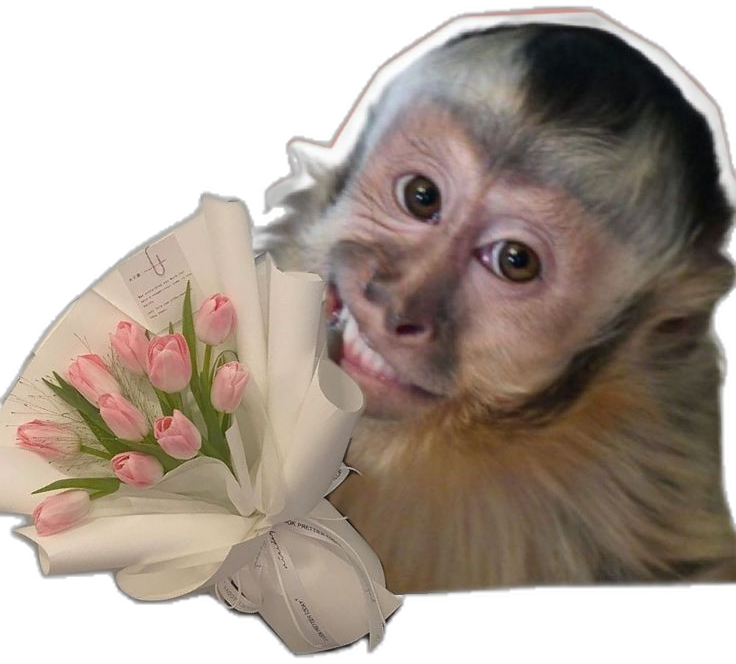
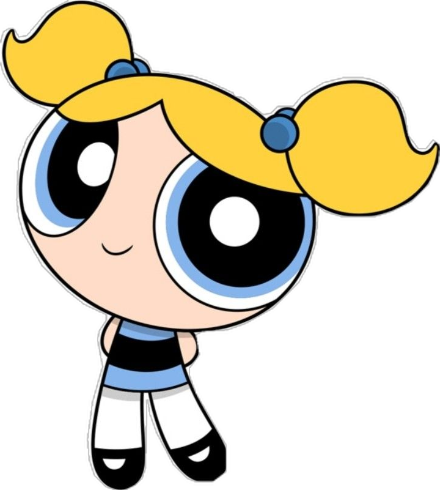
2. Un hombre que insiste
(no es un tonto)Siempre he dicho que un hombre que insiste, que hace todo lo posible, no es un hombre tonto o con falta de amor propio. Solo es un hombre enamorado que quiere amar y ser amado.
Un hombre que no solo te quiso por tu cuerpo —aunque me moría por tenerte a mi lado—.
...y que no te quiere solo por tu cuerpo. Quiero que entiendas eso muy claro, para que sepas elegir el tipo de persona a la cual quieras brindarle tu confianza de nuevo.
DIVIÉRTETE, PERO NO OLVIDES TUS SUEÑOS. Diviértete, pásala rico, no pasa nada. Pero recuerda tu objetivo. Despeja la mente de vez en cuando, pero no descuides tus sueños. Ten prioridad en cosas que realmente aporten valor a tu vida. Los amigos, la fiesta, las personas… todo es pasajero.
③ / ⑦
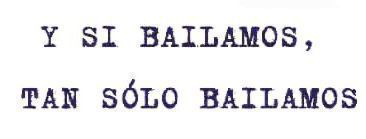
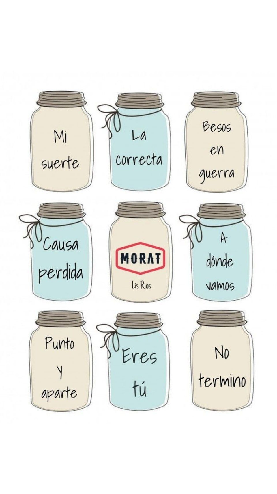
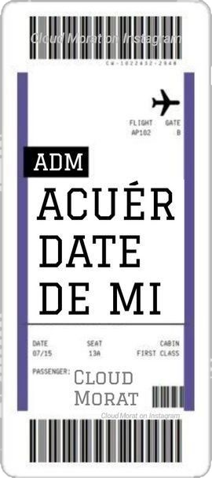
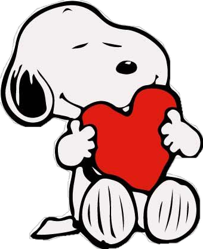
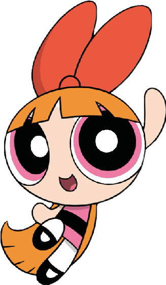
3. Yo ya cumplí mi misión
(te hice sentir especial)Solo dímelo, ¿ok? Dime: "No te quiero, no quiero estar contigo". Solo dilo, di: "No quiero". Di que no quieres estar conmigo, dímelo y te dejaré en paz.
Dime lo que quieres, dime lo que sientes. Por más cruel que suene, creo que me merezco la verdad de saber qué fui yo para ti. ¿Qué querías? ¿Qué quieres?
Yo ya cumplí mi misión… Te hice reír, te hice sentir especial, te cuidé a mi manera, y estuve siempre para ti. Ahora solo quiero que seas feliz, aunque no sea conmigo.
Sí, me dolió que no fuimos ni somos nada. Me dolió no saber nunca qué sentías por mí, aunque en su mayor parte siempre lo sospeché. Y siempre entendí que solo iba a ser tu persona segura, la que no te falla.
Me molesta mucho no saber lo que fui yo para ti. Me molesta no saber cuáles fueron tus intenciones reales. Y si mentir sería decir que fui tu opción más ideal, creo que prefiero la verdad, aunque sea fría y horrible.
④ / ⑦
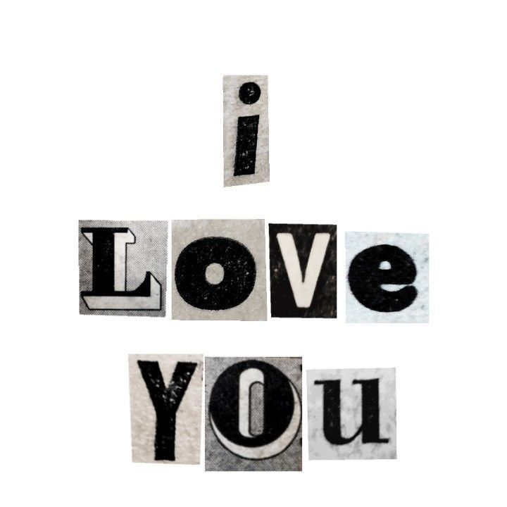
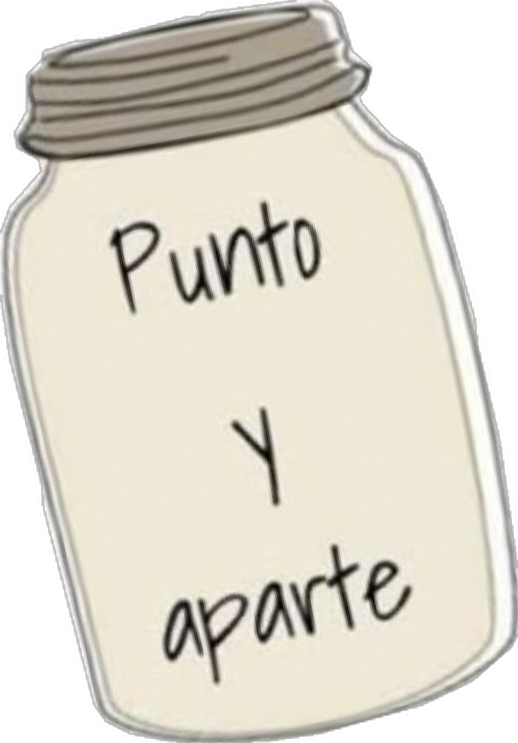
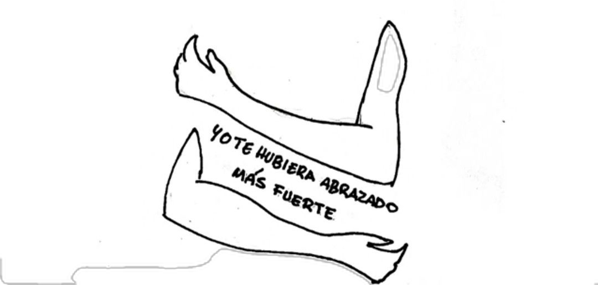

4. No fuimos nada, pero...
(siempre fuimos algo)Me molesta no saber por qué te celo, si tú no eres nada mío. Si estás con alguien más, me pregunto: ¿fue cosa del destino ponerte en mi camino?
Para ti, de pronto, no fui nada. Pero tú para mí lo fuiste todo. Quien te quería como yo, va a estar difícil de conseguir. Por ti, iba contra la marea si era posible.
No fuimos nada, pero nos dijimos "te quiero".
No fuimos nada, pero la pasamos tan bien al inicio.
No fuimos nada, pero moría por tocar tus manos.
No fuimos nada, pero aprendí a extrañar tus silencios.
No fuimos nada, pero hice planes que nunca sucedieron.
No fuimos nada, pero sigo imaginando lo que pudo haber sido.
No fuimos nada, pero entendí que algunos amores llegan para enseñarte a soltar.
No fuimos nada, pero siempre serás mía.
Y sí, a veces los "casi algo" nos enseñan a volver a nosotros mismos, a amarnos más profundamente y a entender que no necesitamos a nadie más para sentirnos completos.
Nunca fuimos nada, pero siempre fuimos algo. Y ese algo fue suficiente para confundirme, romperme, emocionarme y hacerme sentir que tal vez, si el mundo hubiera girado diferente, sí habríamos sido.
⑤ / ⑦
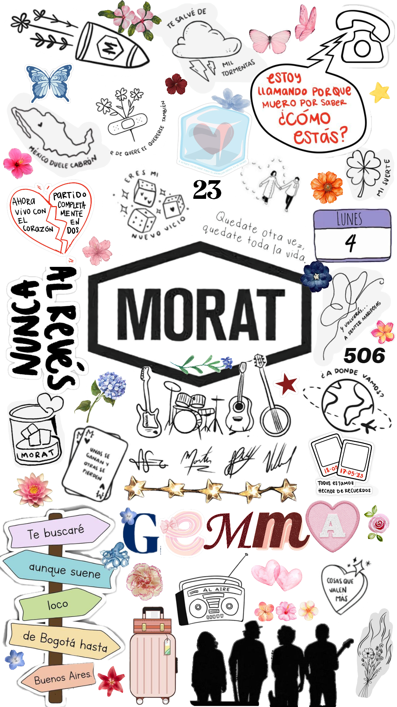

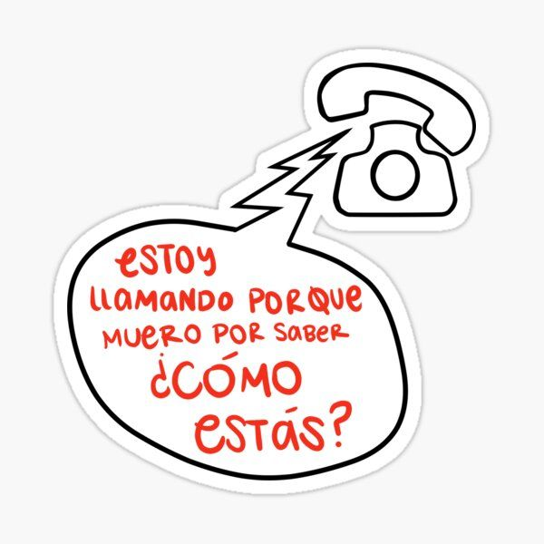
5. Conocerte fue un regalo
(y motivación para ti)Que alguien te conozca en tu peor momento y no se asuste ni se aleje, sino que elija estar contigo, es una de las mejores demostraciones de amor. Intenta reconocer eso en cada persona.
Siéntete privilegiada. A ti te lo di todo. Nunca dejes de ser buena persona, aunque te pasen cosas malas. 🌷
Ahora que llegues, solo preocúpate por hacer las cosas bien. La vida siempre te recompensa todo lo bueno que haces. Intenta aprender de tus errores.
Demuéstrale a tu familia de lo que estás hecha. Que eres capaz, valiente, que te puedes superar constantemente. No tengas miedo de los nuevos comienzos. Vienen nuevas personas, nuevos lugares... abraza las nuevas oportunidades.
Si quieres volar, renuncia a lo que te hunde. Recuerda que el que no arriesga, se queda en el mismo lugar toda la vida. Eres un ser importante y único en este mundo.
⑥ / ⑦
6. Haz el trabajo
(y nunca es tarde)Si te sirve de algo, nunca es muy tarde para ser quien tú quieras ser. No hay tiempo límite. Empieza cuando quieras. Puedes cambiar o seguir igual; la vida no tiene reglas.
Hazte un favor: no le hagas caso a la gente que te dice "no puedes", que "eso no es lo tuyo". Cree en ti. Solo necesitas creer en ti misma. Nadie va a entender tu proceso, y está bien.
Nadie se va a disculpar por las cosas que te hicieron. Pasa la gente. Solo no dejes que eso te afecte tanto e intenta sacarle provecho a todo.
A veces, cuando uno no sabe para dónde ir, no tiene que ir para ningún lado. Solo hay que quedarse quieto y aclarar lo que uno quiere.
Tú te sigues levantando todos los días a pesar de todo, con el corazón confundido... pero lo valioso de ti es que sigues intentando. Eres alguien admirable.
· la niña que siempre estuvo ahí ·

Emi 🌷
ella siempre fue su favorita de Morat 🎸
Con todo mi corazón,
Reydel ❤️🩹
🌷❤️🩹
⑦ / ⑦